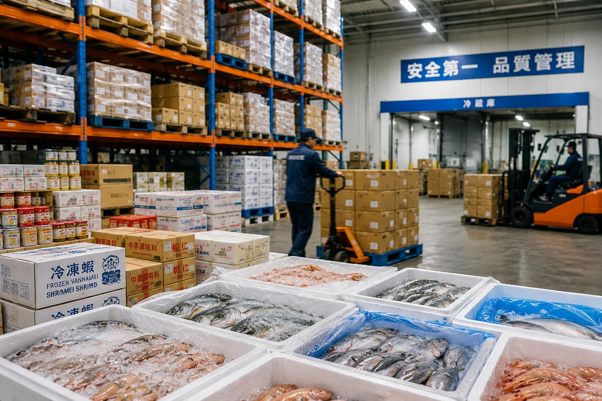
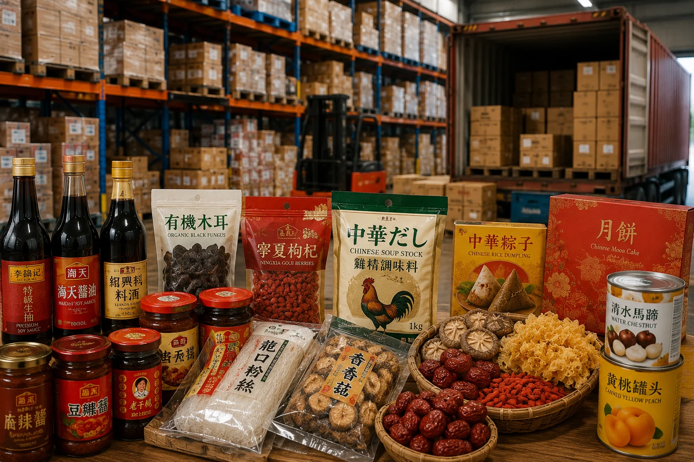

飲食店運営を支える、商品調達と供給。
水産物や中国食品の輸入・卸業務を行い、飲食事業者や取引先へ安定した商品供給を行っています。レストラン運営で培った現場感覚を活かし、実際の店舗需要に即した商品供給を目指します。
食品輸入卸
飲食事業者や取引先へ、安定した商品供給を行っています。
水産物や中国食品の輸入・卸業務を行い、飲食事業者や取引先へ安定した商品供給を行っています。レストラン運営で培った現場感覚を活かし、実際の店舗需要に即した商品供給を目指します。


飲食事業者の調理現場で求められる水産物を取り扱います。

中国料理に関わる食品を中心に、輸入・卸業務を行います。
飲食事業者や取引先に向けて、安定した供給体制を整えます。
水産物・中国食品の取り扱いに関するお問い合わせはこちらからご連絡ください。